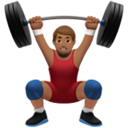

A Workout Blog (and an HTML project)

Written by: Kavan Paramathasan
Email me, GitHub, LinkedIn
My Split & Why
Goal of the Routine
What I am currently following at this point in time. The purpose is to lift as much as possible with recovery in mind, get strong at primary lifts,
and regain the muscle/strength I've lost during the pandemic.
The cornerstones of my split are:
- Barbell Smith Machine Squat
- — The priority lately for myself. In classic gym bro fashion, I've neglected my lower body in my earlier years...
Haven't trained nearly as hard, or had the same amount of volume as my upper body.
- — Been slighly more injury prone due to this, especially my low back. But dues are being paid and things will be rounded out soon!
- Barbell Bench Press
- — Chest has always been a strong point for myself have grown up doing pushups. However my bench press numbers haven't reflected that.
A large part of that is my lack of bodyweight. A bulk and training in lower rep ranges for sets is the way for this one.
- Barbell Smith Machine Row
- — Don't find these fun personally. But added these back into the rotation to move a large amount of weight. Need to balance the bench press somehow.
- — These are a staple in the bodybuilding community for a reason!
- Machine Lat Pulldown
- — For some reason I haven't progressed on these over the years.
- — The plan is to track it more rigorously. Perform dropsets. Do more sets in total, and train for strength to improve the numbers for this movement.
- — Versus being overconcerned with mind-muscle connection as I have thus far.
The Split
BB = Barbell, DB = Dumbbell, Smith = Smith Machine
| PUSH |
PULL |
LEGS |
| BB Bench Press |
Neutral-grip Assisted Pullup Machine |
Smith BB Squat |
| Slight Incline DB Press |
Smith BB Row |
Seated Leg Curl |
| Machine Flye |
Machine Pulldown |
Smith BB Reverse Lunge |
| Seated Incline DB Curl |
Reverse Machine Flye |
Low Back Extension (upper glute focus) |
| EZ Bar Skullcrusher |
DB Row |
Calf Raise |
| Reverse Curl |
DB Shoulder Press |
Hip Abduction Machine |
| Cable Rope Crunch |
Cable Lateral Raise |
|
Some More Worth Mentioning
Important Things I've Learned Along the Way
- Intensity > Frequency > Volume — should always be training with purpose, a couple reps short or to failure
- There is no way you don't grow from grinding hard for weeks/months/years
- When you've truly trained hard for weeks at a time, there comes a point where training more becomes counterproductive.
At this point taking a break and coming back leads to an equal amount of gain versus digging further into the hole.
Usually this comes in the form of reduced energy levels, and not being able to perform at your usual levels.
- Eat to match your training! Muscle building requires a solid amount of food (even when trying to lose weight). Be mindful of your protein intake, and portions.
- Body recomposition as a beginner is a thing. You gain muscle, and lose fat at the same time with enough of a training stimulus!
Who I'm Following
Thank you for reading & happy lifting! (: